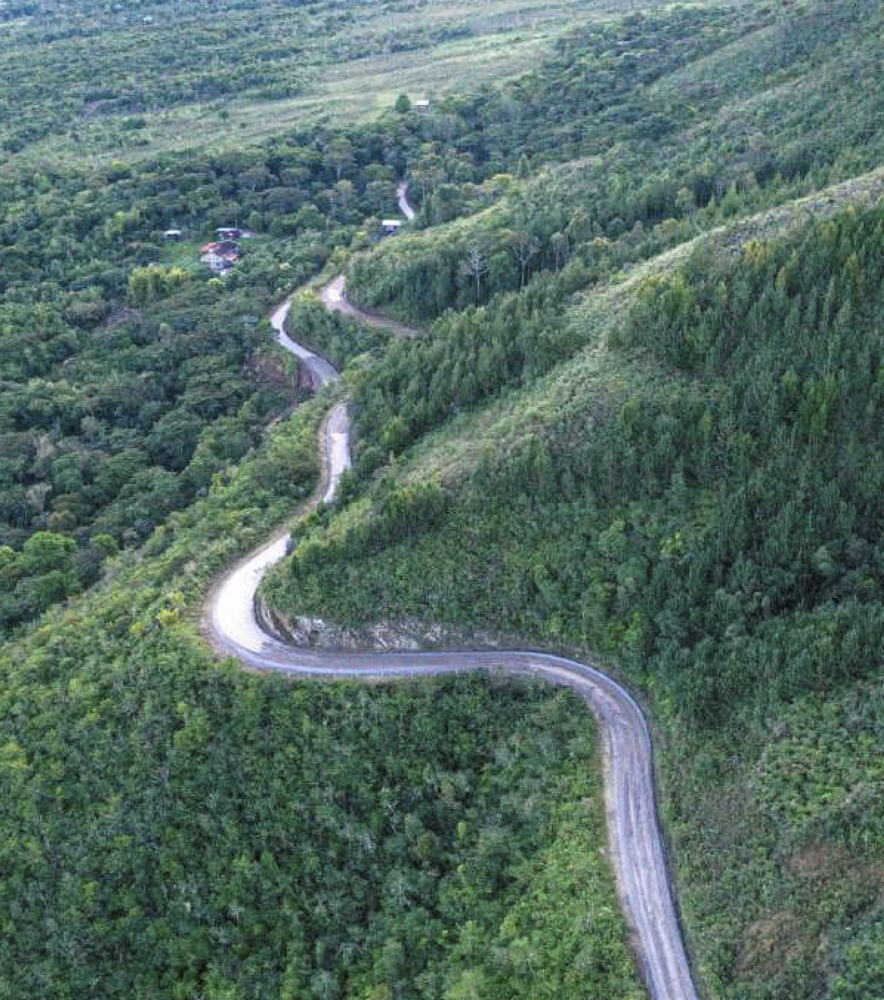
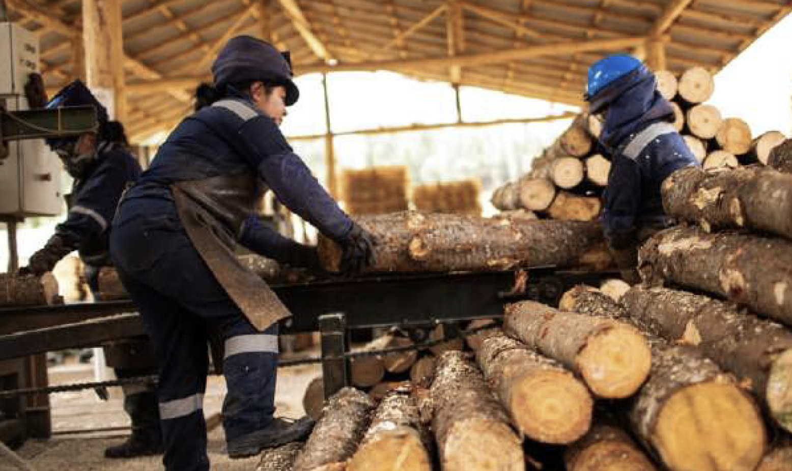

propuestas para mejorar el ambiente de negocios en las regiones
aportes de 23 cámaras de comercio de las regiones del perú
🔍
aportes de 23 cámaras de comercio de las regiones del perú
Alta corrupción en el gobierno regional, que afecta la ejecución de proyectos y el desarrollo regional. El costo estimado de la corrupción en la región a diciembre 2023 es de 483 millones de soles, donde más del 50% proviene del gobierno regional, según el informe de la Incidencia de la Corrupción e Inconducta Funcional de la Contraloría (2024).
Según el Reporte de Obras Paralizadas en el territorio nacional a setiembre de 2024 de la Contraloría General de la República, se registra 53 obras paralizadas en la región. En cuanto al porcentaje de ejecución pendiente respecto al costo actualizado de la inversión, este asciende al 14%.
Proyectos de infraestructura paralizados o no ejecutados, como el Proyecto de Mejoramiento de Vías Departamentales Provincia Bagua y Utcubamba o Parque Industrial de Amazonas.
Falta de interés y planificación por parte de las autoridades regionales y locales para fomentar el potencial agrícola y turístico que tiene la región.
Alta tasa de informalidad empresarial. Cerca de 96,3% de las micro y pequeñas empresas (mypes) opera de manera informal en la región, según el Ministerio de la Producción (2023).
Dificultades en la obtención de licencias y permisos debido a la burocracia en los gobiernos locales. Las empresas pueden tardar como mínimo entre dos o tres meses para completar los requisitos necesarios e iniciar operaciones de manera formal.
Amazonas presenta una alta informalidad laboral del 86,4%, según el Observatorio PRODUCEmpresarial (2024).
Insuficientes incentivos y apoyo, tanto del gobierno central como del gobierno regional estatal para fomentar la formalización de las empresas.
Existen preocupaciones sobre la seguridad ciudadana en algunas zonas de los distritos de Bagua Grande (provincia Utcubamba) y San Nicolás (provincia Rodríguez de Mendoza). Amazonas registra más 5.000 denuncias por hechos delictivos a octubre del 2024, según el Observatorio Nacional de Seguridad Ciudadana del Ministerio del Interior.
Carreteras en mal estado y conectividad terrestre deficiente, especialmente después de deslizamientos y fuertes sismos dificultan el transporte de productos agrícolas y madereros. En noviembre de 2021, Amazonas fue sacudida por un sismo de magnitud 7,5, y solo dos meses después, ocurrió otro, esta vez de magnitud 6,8. Estas condiciones limitan la capacidad de carga y aumentan los tiempos de traslado, lo que, a su vez, afecta negativamente la competitividad de la región.
La infraestructura aeroportuaria tiene una capacidad limitada que incrementa los costos de transporte y limitan el acceso para turistas y viajeros de negocios.
Falta de infraestructura de riego y reservorios, lo que limita la capacidad de producción agrícola (como el café y el cacao) durante todo el año.
Producción agrícola y ganadera poco tecnificada y dependiente de la temporada de lluvias. El 92,1% de la superficie agrícola de la región no cuenta con riego tecnificado, según el Reporte Departamental y Distrital de Indicadores de Brechas por Sector del Invierte.pe.
Minería ilegal en zonas fronterizas (como el distrito de Cenepa) que afecta el medio ambiente y la economía local.
Deforestación indiscriminada y problemas relacionados con el narcotráfico en algunas áreas, como Imaza, en la provincia de Bagua, y Lonya Grande, en la provincia de Utcubamba. En los últimos 24 años, la región Amazonas ha perdido más de 121 mil hectáreas de bosques, según la plataforma GEOBOSQUES del Minam.
Potencial turístico no explotado adecuadamente debido a la falta de infraestructura y conectividad, como en la ruta de Jaén a Chachapoyas; o de esta provincia a Luya, donde se ubica la fortaleza de Kuélap.
Falta de promoción y puesta en valor de los recursos turísticos, culturales y paisajísticos, como los restos arqueológicos de Tombos de Revash, la catarata de Yumbilla, la laguna de los Cóndores y el Complejo Arqueológico de Kuélap. En 2022, este último sufrió el colapso de una parte de su muralla perimétrica debido a las intensas lluvias y la limitada capacidad de drenaje de la zona, lo que representó uno de los mayores daños al patrimonio histórico en los últimos años.
Reforzar los mecanismos de transparencia y rendición de cuentas en la administración pública, mediante una mayor presencia de la Contraloría General de la República con un enfoque orientador, así como de la Secretaría de Integridad Pública.
Fortalecer la fiscalización y supervisión para evitar desvíos de fondos de proyectos importantes como el Parque Industrial de Amazonas o el Mercado de Productores Agropecuarios.
Promover la integridad y la ética en las instituciones públicas regionales, locales, sociedad civil y sector privado.
Estandarizar los procesos de formalización empresarial y obtención de licencias.
Fortalecer programas específicos de apoyo a la formalización, incluyendo asesoría técnica y legal
Revisar y ajustar las políticas de fiscalización para hacerlas más justas y equitativas, y con un enfoque orientador y no punitivo.
Mantener y mejorar la seguridad ciudadana mediante la organización y colaboración comunitaria.
Implementar programas de vigilancia y seguridad para prevenir delitos y promover un entorno seguro en las zonas más vulnerables, como los distritos como Bagua Grande y San Nicolás.
Difundir un cronograma actualizado de las reparaciones y mantenimientos de carreteras para mejorar la conectividad terrestre, incluidos responsables y mecanismos de sanción.
Destrabar la implementación del Plan Maestro de Desarrollo del Aeropuerto de Chachapoyas para permitir una mayor frecuencia de vuelos comerciales y rutas interregionales.
Fomentar la inversión en grandes proyectos, como la mejora de las vías departamentales en las provincias de Bagua y Utcubamba. Para asegurar su ejecución dentro de los plazos y presupuestos establecidos, es clave implementar oficinas de gestión de proyectos (PMO), que permitan una adecuada gestión de riesgos, calidad, adquisiciones y otros aspectos críticos del proceso.
Promover la tecnificación agrícola mediante sistemas de riego, reservorios y proyectos de cosecha de agua, como el proyecto de creación del servicio de siembra y cosecha de agua en la provincia de Bongará, para garantizar la producción sostenible y aumentar la productividad durante todo el año.
Incrementar programas de capacitación técnica y profesional para agricultores, ganaderos y empresarios de pymes, con énfasis en los pequeños productores.
Fortalecer el programa de Agroideas para fomentar la asociatividad de pequeños productores, mejorar su competitividad y facilitando su acceso a mercados internacionales.
Promover un clima de inversión favorable y combatir la percepción negativa hacia grandes capitales mediante acciones impulsadas por las autoridades regionales y locales.
Proveer acceso a financiamiento y programas de apoyo para impulsar a las micro y pequeñas empresas (mypes) de las principales cadenas productivas de la región, a través de Produce.
Fomentar la diversificación económica y el crecimiento de sectores como la agricultura, la ganadería y el turismo.
Fortalecer la vinculación entre la Universidad Toribio Rodríguez de Mendoza y el sector productivo para fomentar la innovación y el desarrollo tecnológico en productos emblemáticos de la región y así aprovechar las potencialidades del territorio.